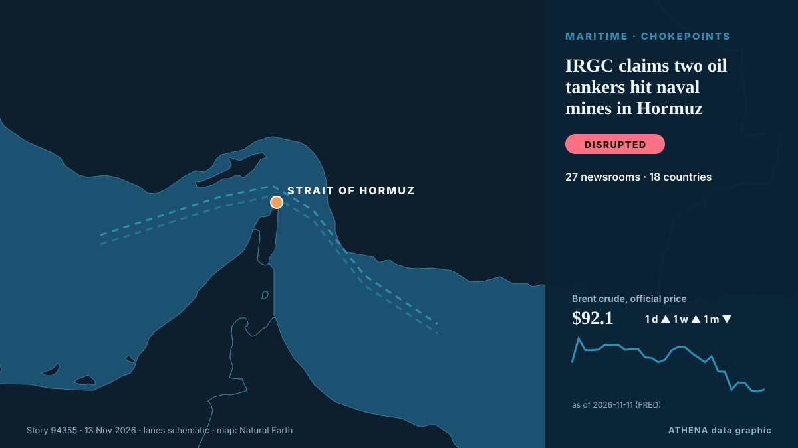

Shipping & ports
SponsoredPresented by  Cybernetics and Artificial Intelligence Lab Welcome to the Cybernetics and Artificial Intelligence Laboratory, established at the Department of Business Administration of the National and Kapodistrian University of Athens. The lab is headed by Professor Dimitrios Thomakos. The lab aims to do research that can be published in top venues. Our research uses tools and methods of Artificial Intelligence, and lies in the following areas: - Forecasting - Decision making - Cyber security - Finance We are always looking forward to collaborating with exceptional students!
Cybernetics and Artificial Intelligence Lab Welcome to the Cybernetics and Artificial Intelligence Laboratory, established at the Department of Business Administration of the National and Kapodistrian University of Athens. The lab is headed by Professor Dimitrios Thomakos. The lab aims to do research that can be published in top venues. Our research uses tools and methods of Artificial Intelligence, and lies in the following areas: - Forecasting - Decision making - Cyber security - Finance We are always looking forward to collaborating with exceptional students!
| 1 Nov | 1 |
|---|---|
| 2 Nov | 0 |
| 3 Nov | 0 |
| 4 Nov | 0 |
| 5 Nov | 1 |
| 6 Nov | 1 |
| 7 Nov | 1 |
| 8 Nov | 0 |
| 9 Nov | 3 |
| 10 Nov | 8 |
| 11 Nov | 4 |
| 12 Nov | 4 |
| 13 Nov | 0 |
| 14 Nov | 0 |

IRGC claims two oil tankers hit naval mines in Hormuz
"One of the vessels is a supertanker; it is currently engulfed in flames following a powerful explosion," the Iranian Revolutionary Guard Corps (IRGC) Navy spokesperson said. from The Jerusalem Post
Maran Tankers takes delivery of newbuild dual-fuel tanker Maran Myron
Maran Tankers Management, part of the Angelicoussis Group, led by Maria Angelicoussis, has announced the delivery of its newbuild tanker *Maran Myron*. from Naftemporiki (English)
ATI Secures Manila South Harbour Concession Renewal To 2063
Renewal provides long-term certainty for ATI to advance investment in port modernisation, innovation and sustainable infrastructure MANILA, PHILIPPINES – Media OutReach Newswire – 12 November 2026… from Laotian Times
Monjasa adds five sister tankers in major fleet renewal deal
Global oil and shipping group, Monjasa is adding five sister tankers to its fleet in the company’s largest-ever tonnage acquisition,. from Cyprus Shipping News
Auramarine to provide methanol fuel supply systems for hydrographic research vessels
Finland’s Auramarine has announced it has signed an agreement with Spain-based Astilleros Gondán S.A. from Bunkerspot
Iran says 3 tankers caught fire in Hormuz
The Revolutionary Guards did not specify the names or nationality of the tankers. from Free Malaysia Today
Panama Canal increases daily transit capacity to 34 slots
The Panama Canal has increased its daily transit capacity to 34 booking slots and raised the maximum allowable draft for vessels using the Neopanamax locks. from Container News
Asia buys up African, Brazilian oil as shipping costs fall
Asian buyers are taking advantage of decreased shipping costs to purchase more African and Brazilian crude oil. from Arab News
Get your data in order and set a course for greener shipping
There is cause for optimism in the shipping sector, and we are seeing more and more initiatives aimed at making shipping greener. from Container News
Iran attacks Didamar island shipping navigation systems in Oman
Gulf exporters have been increasingly using workarounds to increase oil flows via Hormuz, such as ship-to-ship transfers off the coast of Oman. from The New Arab
Tankers continue to burn in the Middle East despite hopes for de-escalation
(Corrects in paragraph 4 to 'a Navig8 tanker', removing reference to 'Navig8 Messi'; it was not clear which Navig8 tanker was shown) Nov 10 (Reuters) - Despite market bets on a de-escalation in the… from Al-Monitor
Russian Diesel Tanker Awaits Destination Off US East Coast
A tanker carrying the first cargo of Russian diesel for the United States has come to a halt off the US east coast, shipping data showed on Tuesday, with its operator saying its destination had not… from MarineLink
Greece Cruise Tourism Shifts as Piraeus Loses 19% of Passengers
Corfu has surpassed 1 million cruise passengers this year, while Rhodes, Chania and Heraklion face declining traffic as geopolitical tensions and rising costs prompt operators to rethink their… from To Vima (English)
Abeille Marengo Sails to Begin Greece-Cyprus Cable Surveys as Turkey Claims Its Consent Was Obtained, Athens Pushes Back
The French research vessel Abeille Marengo sailed from the port of Heraklion at 6:26 p.m. on Tuesday, November 10, to begin seabed surveys for the Greece-Cyprus electricity interconnection. from The National Herald
AD Ports Group posts record Q3 2026 profit as UAE container volumes fall 57%
Abu Dhabi, UAE (Ports Europe) November 11, 2026 – AD Ports Group reported record net profit of about €237 million in Q3 2026, up 64%, as shipping growth offset weaker UAE port volumes. from Ports Europe
UKMTO reports tanker incident in Strait of Hormuz
UKMTO reported an incident involving a tanker in the Strait of Hormuz. from Arab News
Taiwan shuts Papua New Guinea office, cuts all aid and halts LNG purchases
It comes less than four months after Papua New Guinea's government announced the closure of Taiwan's mission in Port Moresby. from RNZ Pacific
LR and MAWANI sign agreement to support the development of Saudi Arabia’s maritime and ports sector
Collaboration will explore opportunities spanning safety, sustainability, digitalisation, institutional capability and professional development Lloyd’s Register (LR) and the Saudi Ports. from Cyprus Shipping News
Black Sea Shipping Activity Falls 37% As Attacks On Merchant Ships Increase
Black Sea shipping activity has fallen by 37% compared with last year as attacks on merchant ships and port infrastructure have increased, Intent reported. from Marine Insight